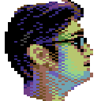
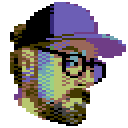

Ookoo+hko=Okay+ish
Ookoohko was an independent game studio founded by Sami Arola, Toni Laakso and Jarkko Salminen. We were active during the years 2009–2013. Our aim was to make games that are good and do them one at a time.
Our first published game for iOS was Get Outta My Galaxy. It was met with generally good reviews and some enthusiasm but failed to sustain us financially. Our second iOS title, Zero Tolerance Hero, was almost finished for quite some time, but never got an official worldwide release.
This is what we are doing at the time of writing this in March 2022:
 Sami works at Fireframe Studios and some more text here too.
Sami works at Fireframe Studios and some more text here too.
Jarkko continues to make game art at Supercell and spends his freetime with a C64 and pixels.
Toni is working towards becoming an expert in web accessibility and unearthing music.